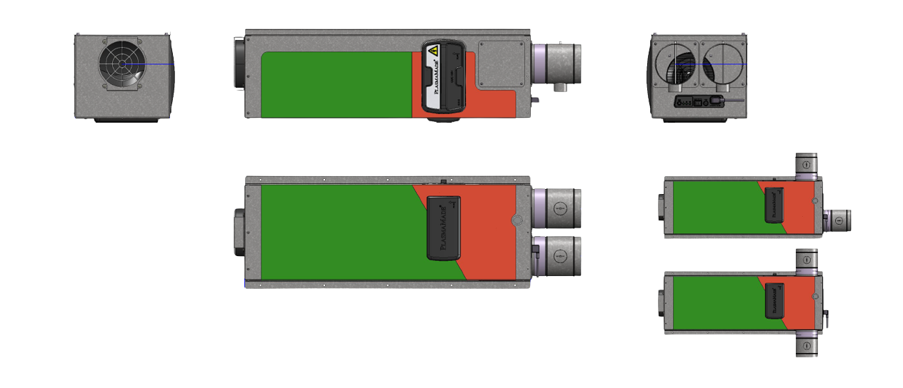
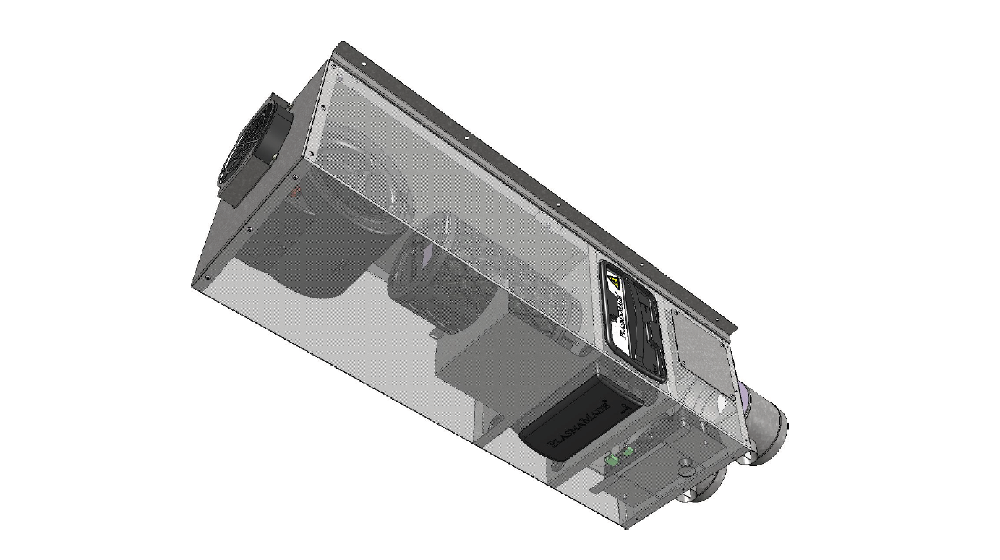

Validatie en techniek
Hybride oplossing met extra buitenluchttoevoer
Extra buitenluchttoevoer voor maximale luchtkwaliteit, waardoor we recirculeren en ventileren. Voor omgevingen waar luchtkwaliteit extra aandacht vraagt, biedt PlasmaMade een optionele uitbreiding op het plafondmodel.


Twee toevoeren, volledig gecontroleerd
Het plafondmodel beschikt standaard over één interne luchtaanvoer. Met deze optie wordt een tweede toevoer toegevoegd voor verse buitenlucht. Beide luchtstromen worden gecontroleerd gemengd en efficiënt gefilterd binnen één geïntegreerd systeem.
Het bestaande plafondmodel vormt de basis voor recirculatie en filtering.
De extra toevoer voegt verse buitenlucht gecontroleerd toe aan hetzelfde systeem.
Beide luchtstromen worden gemengd en gefilterd zonder losse deeloplossingen naast elkaar.
Wat laten de metingen zien?
Onafhankelijke metingen met GRIMM-meetapparatuur tonen aan dat de unit een duidelijke reductie van fijnstof realiseert. Bij aanvullende tests met circa 30 procent buitenluchttoevoer werden pieken in fijnstof sneller afgevlakt en bleef de luchtkwaliteit constanter na externe invloeden zoals het openen van deuren.
Naadloos geïntegreerd plafondmodel
De extra buitenluchttoevoer wordt volledig geïntegreerd in het bestaande plafondmodel. Dankzij de modulaire opbouw zijn meerdere configuraties mogelijk, met afzonderlijk regelbare luchttoevoeren. De unit blijft compact, stekkerklaar geleverd en eenvoudig aan te sluiten op bestaande kanalen.
Meerdere configuraties zijn mogelijk zonder het basisconcept van de plafondunit los te laten.
De luchttoevoeren kunnen apart worden geregeld voor een gecontroleerde afstemming per project.
De unit blijft compact en is eenvoudig aan te sluiten op bestaande kanalen.
Voordelen
De extra buitenluchttoevoer helpt pieken sneller af te vlakken.
De luchtkwaliteit blijft stabieler na invloeden van buitenaf.
Verse buitenlucht wordt niet los toegevoegd, maar onderdeel van het totale systeem.
De oplossing blijft compact en geschikt voor projectmatige afstemming.
De configuratie is bedoeld voor omgevingen waar luchtkwaliteit extra aandacht vraagt.
Projectdocumenten en downloads
De onderstaande documenten horen bij de plafondunit en de configuratie met extra buitenluchttoevoer.
BAM plafondunit fijnstof
Document over de plafondunit en de fijnstofprestaties in projecttoepassingen.
Download BAM plafondunit fijnstofTest 8-12-2025 met extra aanvulling 30% luchttoevoer
Testdocument met de aanvullende metingen bij circa 30 procent luchttoevoer.
Download test 30% luchttoevoer